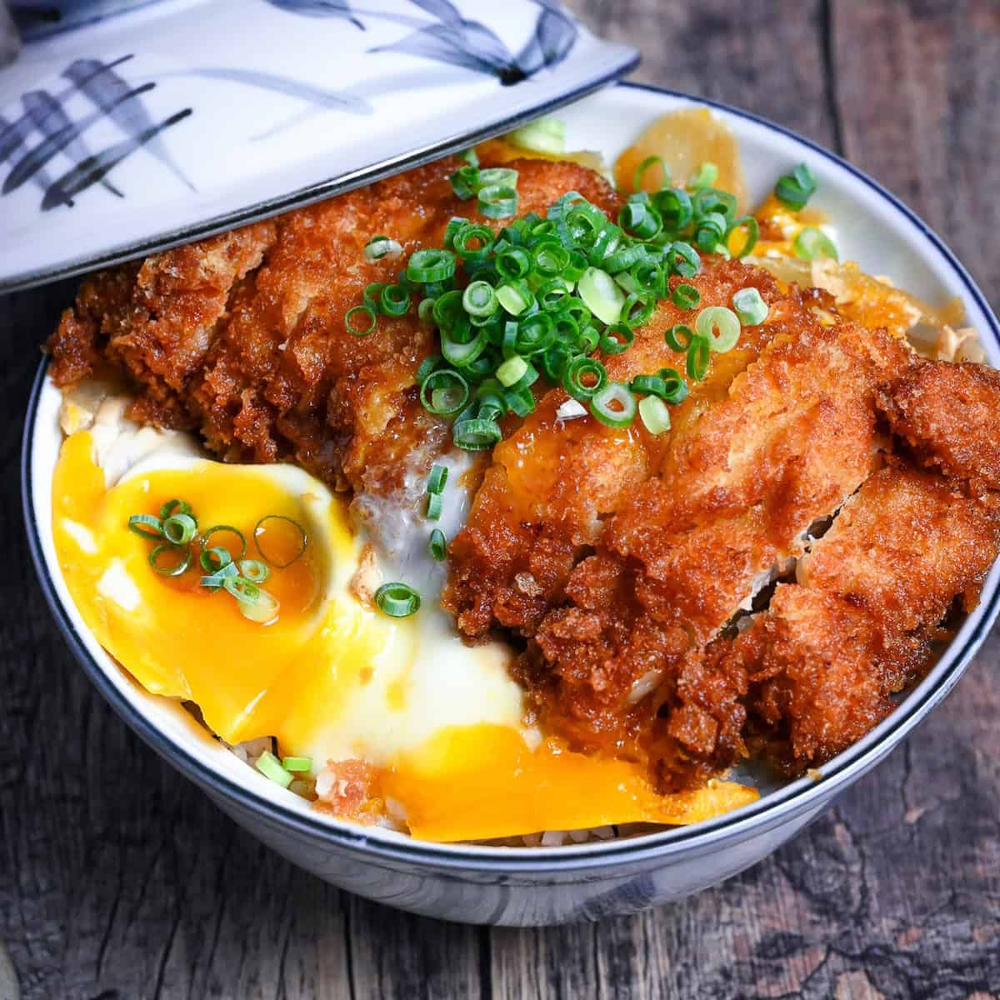
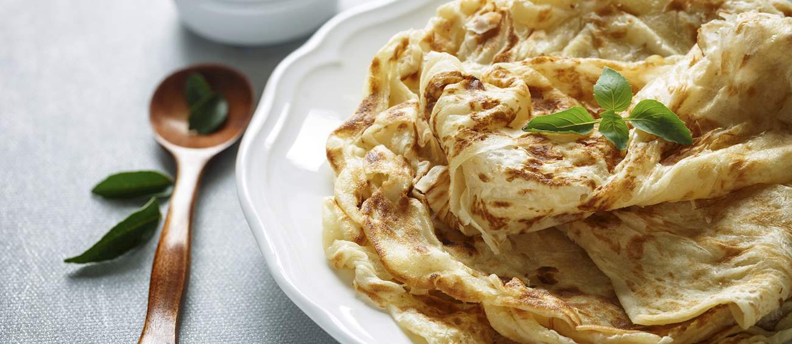
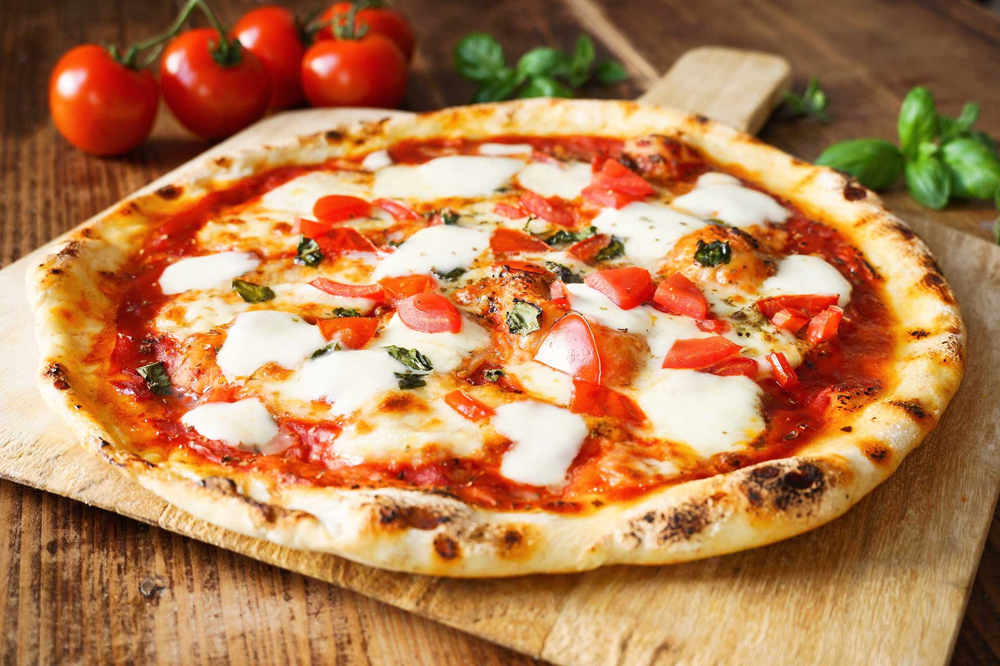
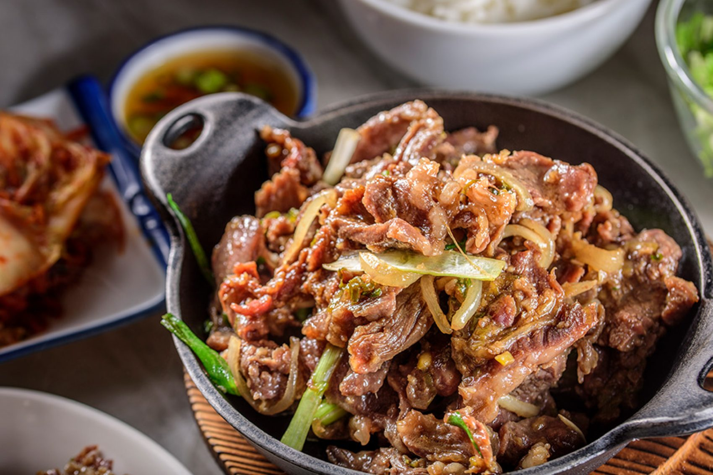
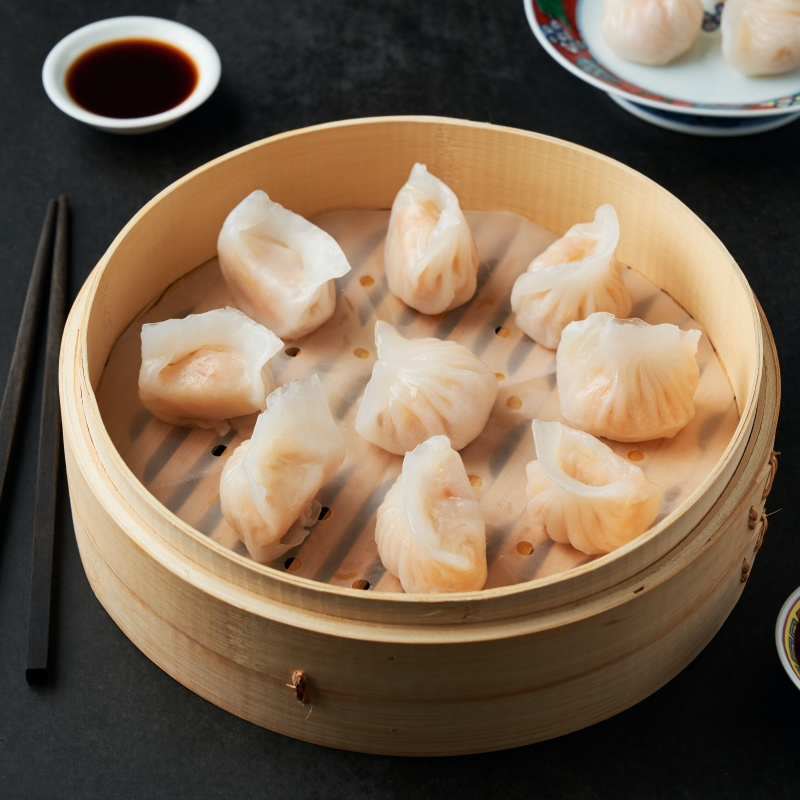
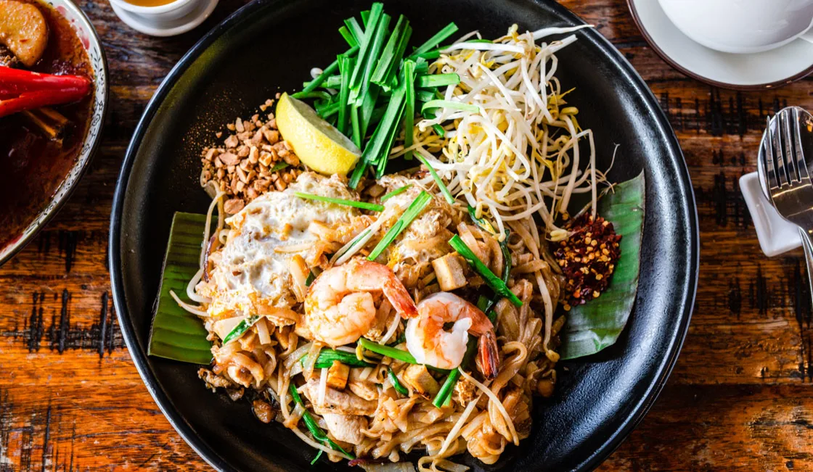

Sakura Kitchen
Cuisine: Japanese
Sakura Kitchen offers a variety of Japanese dishes
in a comfortable yet welcoming dining environment
Customers can enjoy freshly prepared ramen, sushi
and rice dishes that is suitable for casual meals
with friends or family. The restaurant aims to provide
a relaxing experience with variety of afforable choices.
It is suitable for those who are interested in exploring
Japenese food.
Signature Dishes:
- Soft Shell Crab - RM15
- Chicken Katsu Don - RM20
- Niku Ramen - RM25
Price Per Person: RM25-50
Reservation Deposit: RM20
Reserve Now

Selera Malaysia
Cuisine: Malaysian
Selera Malaysia introduces customers to a variety
of traditional Malaysia dishes. The menu includes
popular local meals that are suitable for breakfast,
lunch and dinner. With afforable prices and amazing
flavours, the restaurant is a perfect choice for
families, students, or tourist who wants to experience
Malaysian cuisine, It offers casual dining environment
for everyday meals.
Signature Dishes:
- Nasi Lemak Ayam Rendang - RM15
- Char Kuey Teow - RM13
- Roti Canai - RM5
Price Per Person: RM15-35
Reservation Deposit: RM10
Reserve Now

L'Italiano
Cuisine: Italian
L'Italiano servers Italian-inspired dishes in
a warm environment setting. Its menu includes
pasta, pizza and other Italian favourites. The
restaurant is suitable for couples and small
groups looking for exquisite dining experience.
It comes with selection of main courses and
desserts, L'Italiano provides a convenient option
for both casual dinners and special occasions.
Signature Dishes:
- Margherita Pizza- RM32
- Spaghetti Carbonara - RM28
- Tiramisu - RM20
Price Per Person: RM35-70
Reservation Deposit: RM30
Reserve Now

Seoul Harvest
Cuisine: Korean
Seoul Harvest offers korean-inspired meals for customers
who enjoy sharing food with friends and families. The menu
includes popular dishes such as bulgogi, Tteokbokki, and
fried chicken. The casual atmosphere makes the dining experience
suitable for group gatherings and relaxed dinner. Customers
can explore variety of food options at a reasonable price.
Signature Dishes:
- Bulgogi - RM20
- Korean Fried Chicken - RM28
- Tteokbokk - RM15
Price Per Person: RM25-50
Reservation Deposit: RM20
Reserve Now

Dim Sum Wok
Cuisine: Chinese
Dim Sum Wok serves a variety of freshly prepared
dim sum and its signature fried rice. Customers
can enjoy popular dishes such as steamed shrimp
dumplings, siu mai, and wok fried rice. It offers
a comfortable environment for lunch with friends,
or a quick meal. With affordable prices and wide
choices of food, Dim Sum Wok is a great place to
enjoy traditional Chinese food.
Signature Dishes:
- Wok Fried Rice - RM18
- Steamed Shrimp Dumplings - RM12
- Steamed Siu Mai - RM10
Price Per Person: RM20-40
Reservation Deposit: RM15
Reserve Now

The Thai Box
Cuisine: Thai
The Thai Box is a casual That restaurant offering dishes
inspired by traditional Thai flavours. Customer can enjoy
popular food like tom yum soup, pad thai, and basil chicken
rice. The restaurant focuses on serving flavourful food with
a balance of spice and sour taste. The Thai Box is an amazing
choice for students, families, and friends who wants to try
satisfying Thai meal together.
Signature Dishes:
- Tom Yum Seafood Soup - RM22
- Pad Thai - RM18
- Thai Basil Chicken Rice - RM17
Price Per Person: RM20-45
Reservation Deposit: RM20
Reserve Now